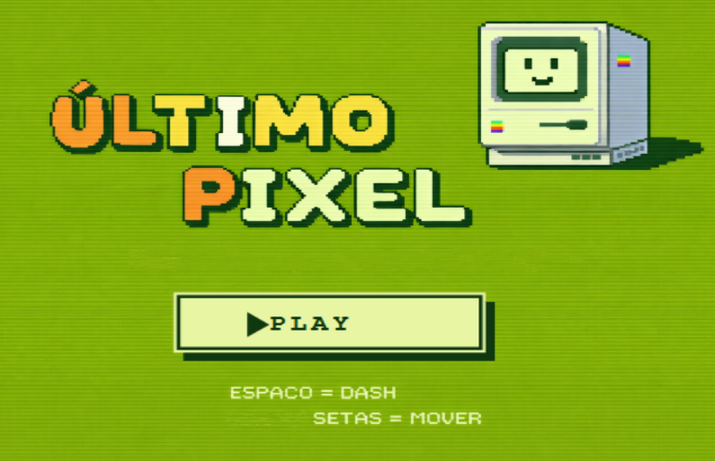
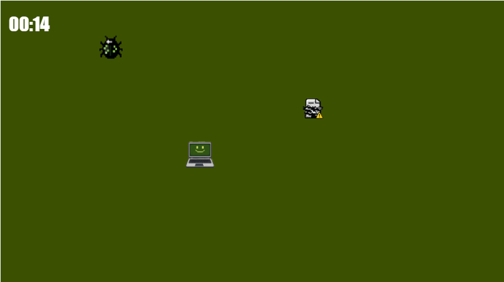
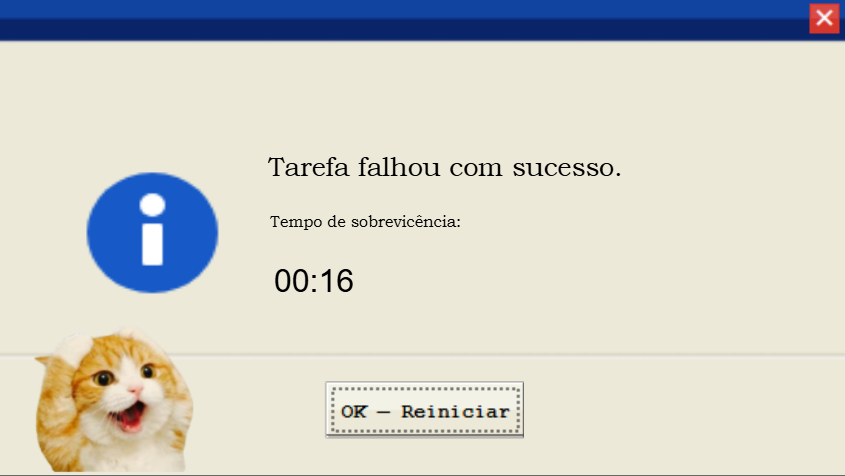
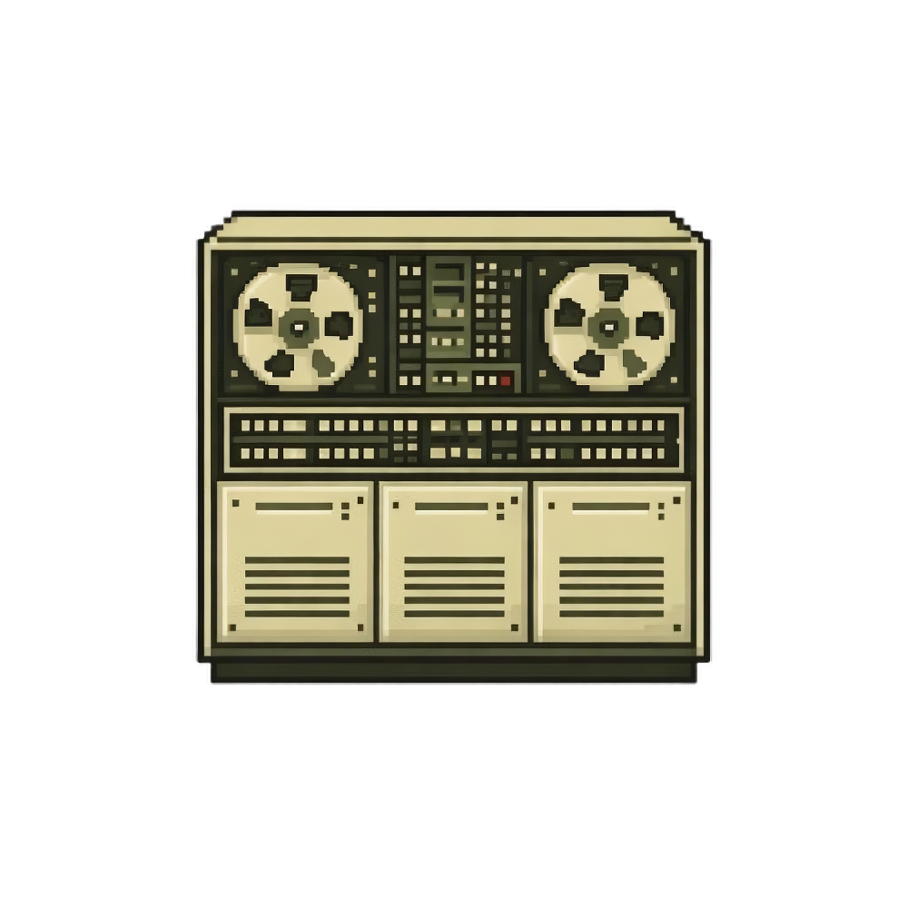
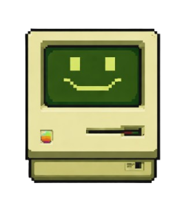
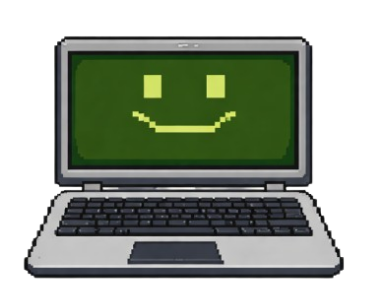
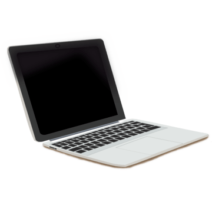
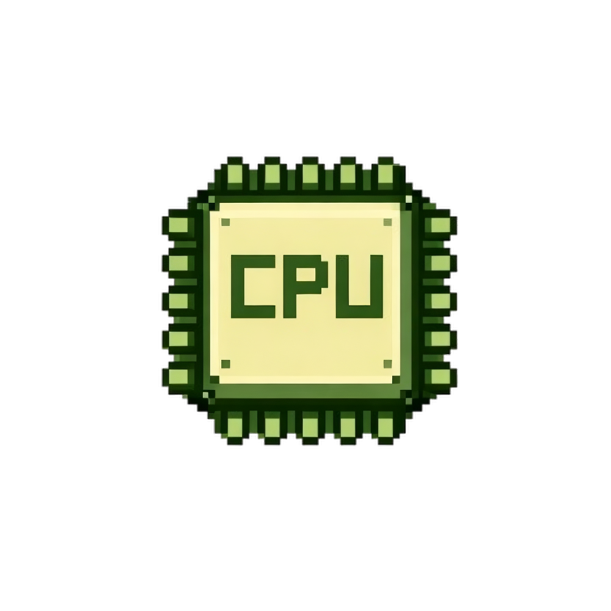
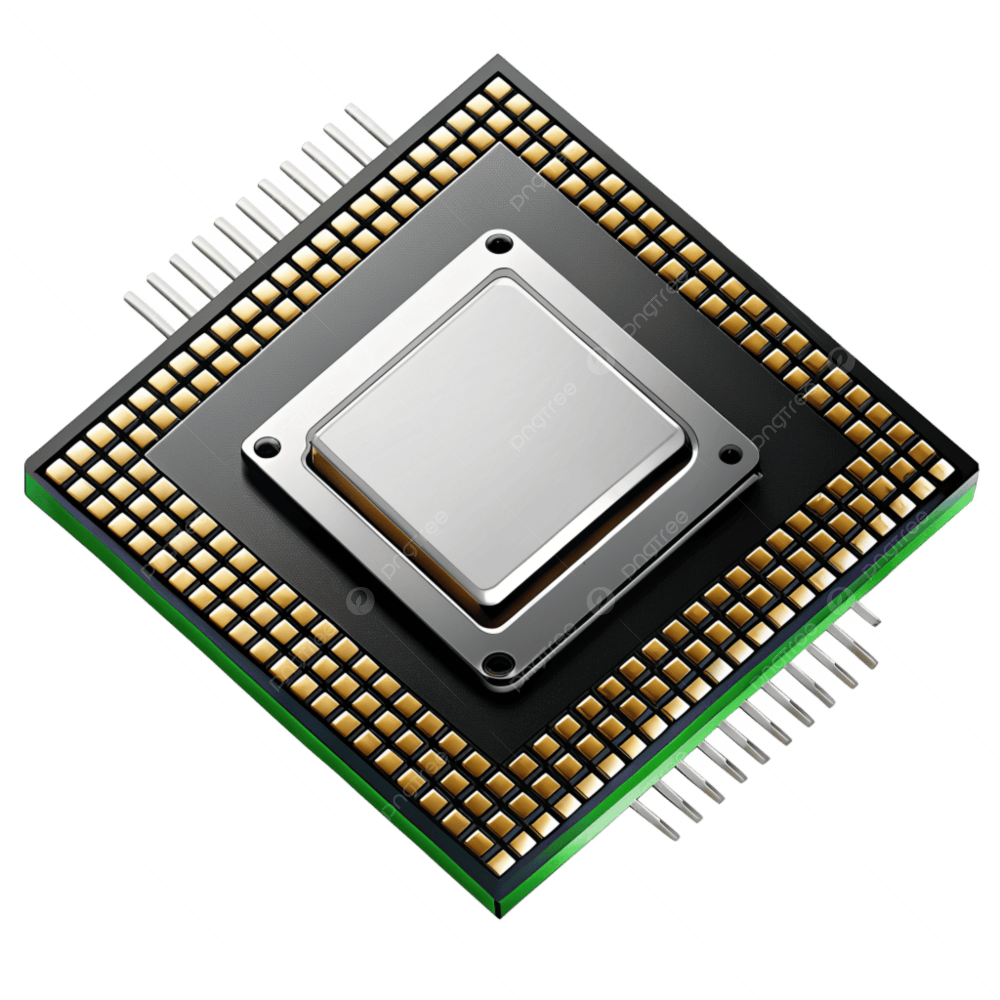

01 — Capturas
Galeria
Screenshots do jogo em ação — da tela de abertura ao game over.

Tela de início — PLAY

Gameplay — Notbook em campo

Game Over — "Tarefa falhou com sucesso."
02 — Personagens
Sprite vs. Real
Cada estágio do personagem é inspirado em hardware real. Veja a referência por trás dos pixels.
Estágio 01
Anos 1970
Sprite
In-game

Referência real
 IBM System/370
IBM System/370
Estágio 02
1984
Sprite
In-game

Referência real
 Apple Macintosh 128K
Apple Macintosh 128K
Estágio 03
Anos 2000
Sprite
In-game

Referência real
Notebook

Estágio 04
Última vida
Sprite
In-game

Referência real
Cpu

03 — Inimigos
Inimigos do Jogo
Vírus, bugs e arquivos corrompidos — ameaças digitais transformadas em pixel art.
Arquivo Corrompido
spawn 2s
Sprite
 In-game
In-game
Inspiração
⚠️
Ícone de erro
Bug
spawn 8s
Sprite
 In-game
In-game
Inspiração
🔴
Erro de software
Vírus
após 30s
Sprite
 In-game
In-game
Inspiração
💉
Malware / trojan
Cada personagem foi criado com muito carinho para evocar a era tecnológica que representa. Desenvolvido por: ·